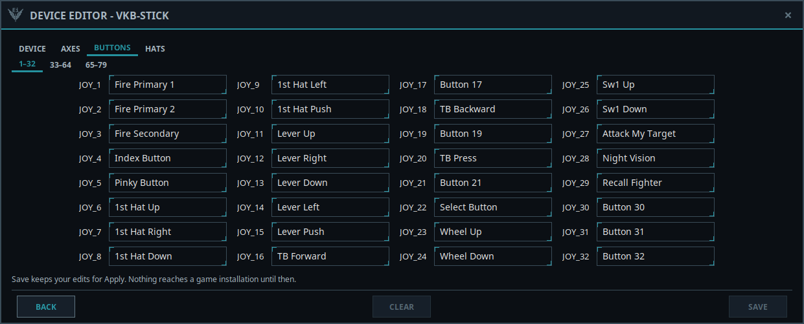

Instalación
Elite Intel V1.2 es la versión actual.
Linux  Windows
Windows
- Descarga el 👉instalador👈.
- Ejecuta el instalador y sigue las instrucciones en pantalla.
- Configurar un modelo de lenguaje. Elite Intel no puede funcionar sin uno. Dos opciones:
- LLM local (gratis, sin conexión): consulta la guía de LLM local. Requiere hardware de GPU capaz.
- LLM en la nube (de pago y más fácil de configurar): consulta Opciones de LLM en la nube para obtener una clave API, y después introdúcela en Servicios → Servicios de IA.
Configuración completada. Siguiente: la interfaz, pestaña a pestaña.
Lista de comprobación del primer arranque
Elite Intel dice estos avisos en voz alta al arrancar los servicios, así que te enterarás de cualquier cosa que falte, pero conviene hacerlos de antemano:
| Paso | Dónde |
|---|---|
| Apuntarlo a un modelo de lenguaje | Servicios → Servicios de IA |
| Comprobar la carpeta del diario | Pestaña Comandante |
| Dejar que BindForge se configure y dar a Vega las teclas que necesita | Pestaña BindForge |
| Calibrar el audio | Pestaña Vega → CALIBRAR AUDIO |
Lo que Elite Intel configura por ti
Tres cosas que conviene conocer antes de empezar con una instalación nueva.
LM Studio, instalado por ti
Si LM Studio es solo para Elite Intel, deja que Elite Intel lo instale. Es la forma recomendada. Pulsa Instalar LM Studio en Servicios → Servicios de IA → LMStudio. Elite Intel instala LM Studio, descarga y carga el modelo, lo prueba y rellena Dirección y Modelo por ti. A partir de ahí arranca LM Studio con sus servicios y lo detiene cuando los detienes o cierras la aplicación, así que el modelo usa la memoria de tu tarjeta gráfica solo mientras Elite Intel está en marcha. Desinstalar LM Studio lo quita de nuevo.
El botón solo aparece cuando tus tarjetas gráficas pueden con el juego y el modelo a la vez: una NVIDIA RTX 3090 de 24 GB o superior, dos tarjetas NVIDIA recientes con unos 20 GB entre las dos, o tarjetas AMD con la misma memoria, en beta. La guía de LLM local tiene los detalles. Si también usas LM Studio para otras cosas, instálalo tú: Elite Intel solo añade el modelo y rellena los campos, y nunca arranca, detiene ni quita tu LM Studio.
Tu HOTAS, joysticks y pedales
La primera vez que abres la pestaña BindForge, hace copia de seguridad de tus archivos de controles, encuentra cada copia del juego en este PC y mira qué hay conectado. De serie, el juego conoce muchos mandos solo por un identificador de hardware. BindForge ofrece un nombre de verdad, como Throttle o Pedals, a cada mando que no lo tiene, y puedes Omitir este paso.

Después, en el Diseñador de alias, pulsa el engranaje de un mando para etiquetar sus botones, ejes y hats. Pulsa un botón y su casilla se ilumina, así sabes cuál es cuál. Las etiquetas aparecen en la pantalla de Controles del juego y en el Editor de bindings.

El juego en más de una tienda
¿Tienes Elite Dangerous en Steam y en Epic? Todas las copias comparten un solo conjunto de controles, pero cada una guarda su propia lista de tus mandos y nombres de botones. Cuando las listas no coinciden, tus controles pueden funcionar en una copia y volver a teclado y ratón en otra. BindForge lo detecta la primera vez que lo abres y ofrece Igualar tus copias del juego:

- Conectar — conecta los mandos con los que vuelas. Pulsa un botón y su fila se ilumina.
- Elegir — responde unas preguntas cortas, como qué nombre conservar para un mando que cada copia llama de forma distinta. Tus controles siguen el nombre que elijas. ¿Demasiadas preguntas? Dejarlo todo como en una de mis copias... lo configura todo como en la copia que más juegas.
- Revisar — mira exactamente lo que tendrá cada copia, y por qué, antes de que cambie nada.

Nada cambia hasta el último paso, y antes se hace copia de seguridad de todo. Ahora no deja tus archivos como están. Si más adelante cambian los archivos de controles de una copia, por ejemplo tras una actualización del juego, BindForge solo pregunta ¿Qué configuración es la actual? y ajusta las demás.
¿Nuevo en Elite Dangerous?
El juego crea sus archivos de controles solo cuando has cambiado algo, y sin ellos Elite Intel no puede manejar tu nave. Completa tu entrenamiento de comandante y luego, en Opciones → Controles del juego, pon el movimiento de la interfaz del mapa galáctico en las teclas de flecha y aplica.
Pasar a otro ordenador
Copia de ajustes y datos, en la pestaña Servicios, guarda tus ajustes, tus datos y tus comandos personalizados en un archivo que puedes restaurar en el ordenador nuevo.
Desinstalación (Linux)
~/.var/app/elite.intel.app/uninstall
Para problemas, usa Informar de un error en la pestaña Vega: envía tu descripción directamente al equipo, sin necesidad de cuenta. Para charlar con nosotros, únete a la comunidad en Matrix con una cuenta gratuita. Lo mejor es la app Element, pero para una charla rápida sirve cualquier navegador moderno. Los informes de errores y los pull requests son bienvenidos.
Comunidad 👉Matrix👈